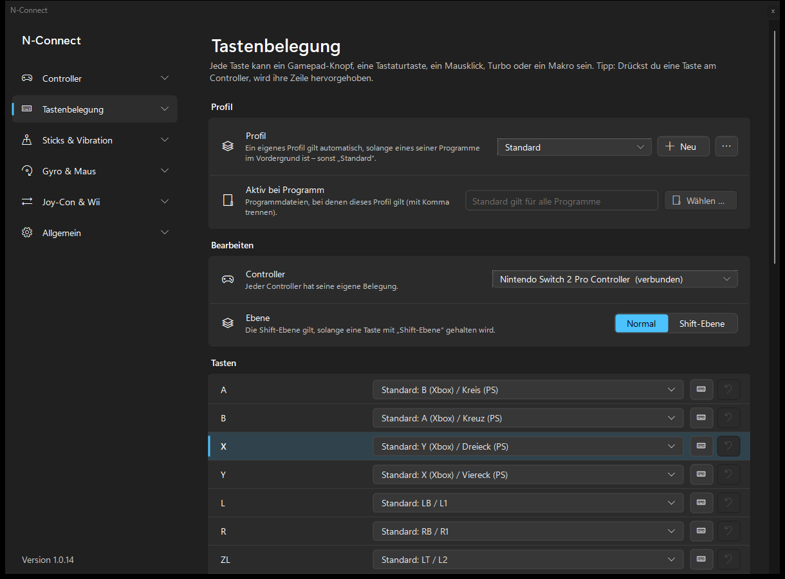
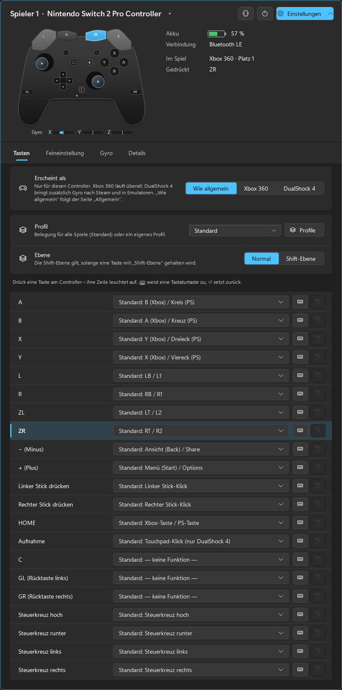
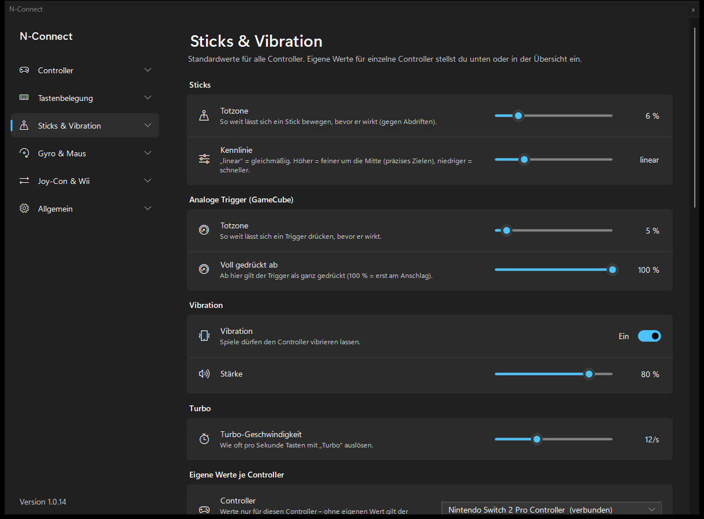

1
2
3
🎮
👥
🔋
⌨️
🎯
🕹️
🩹
🔄



Switch 2 Pro ControllerJoy-Con 2
GameCube (Switch 2)Switch Pro Controller
Joy-ConNES · SNES · N64 · Mega Drive (NSO)
Wii Remote · Nunchuk · ClassicWii U Pro Controller
DualShock 4DualSense · DualSense Edge
Xbox 360 · One · Series · Elite